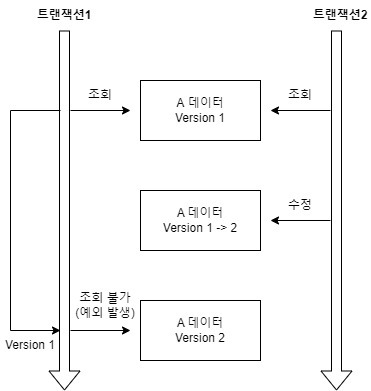

16.1 트랜잭션과 락
16.1.1 트랜잭션과 격리 수준
- ACID
- 격리 수준
- 트랜잭션 격리 수준으로는 second lost updates problem 을 해결 불가
[참고] : [5. 트랜잭션과 잠금](/%EC%B1%85/real%20mysql%201/5.%20%ED%8A%B8%EB%9E%9C%EC%9E%AD%EC%85%98%EA%B3%BC%20%EC%9E%A0%EA%B8%88.md#5.4 MySQL의 격리 수준)
트랜잭션을 사용하면 마지막 커밋만 인정하기 만 적용된다.
16.1.2 낙관적 락과 비관적 락 기초
- 1차 캐시를 활용헤 READ COMMITTED 격리 수준에서도 어플리케이션 레벨에서 REPEATABLE READ 가능
- 낙관적 락
- 비관적 락
- 두번의 갱신 분실 문제 : A,B 가 동시에 레코드를 수정했을 때 이후에 수정된 사항만 데이터베이스에 적용되는 것
- 마지막 커밋만 인정
- 최초 커밋만 인정 :
@Version기능으로 쉽게 구현 가능 - 충돌하는 갱신 내용 병합하기
16.1.3 @Version
- JPA 가 제공하는 낙관적 락을 사용하기 위한 어노테이션
@Entity
public class Board{
@Id
private String id;
@Version
private Integer version;
}- 수정할 때 마다
version값이 자동으로 증가한다. 조회 시점 버전과 수정 시점의 버전이 다르다면 예외가 발생한다. - 즉 최초 커밋만 인정 이 사용된다.
버전 정보 비교 방법
update board set title=?,version=? (+1 시킨다.) where id=?
And version =? (최초 조회 시 의 버전)- 다른 트랜잭션에서 해당 레코드를 수정해
version이 변경되었으면 where절에 의해 수정할 레코드를 찾지 못하게 된다. - JPA 가 버전이 이미 증가한 것으로 판단하고 예외를 발생 시킨다.
- 엔티티의 값을 변경하면 증가하며, 임베디드 타입, 값 타입 컬렉션 또한 변경 시 버전이 증가한다.
- 연관관계 필드는 외래 키를 관리하는 연관 관계의 주인 필드를 수정할 때만 버전이 증가한다.
version값은 임의로 수정하면 안되나 벌크 연산 시에는 버전 필드를 강제로 증가 시켜야 한다.
16.1.4 JPA 락 사용
em.find(Board.class,id,LockModeType.OPTIMISTIC)em.lock(board,LockModeType.OPTIMISTIC)
| Lock Type | 설명 |
|---|---|
| OPTIMISTIC | 낙관적 잠금. 엔티티의 @Version 필드를 기반으로 병행 업데이트를 제어. |
| OPTIMISTIC_FORCE_INCREMENT | 낙관적 잠금 + 버전 증가 강제. 업데이트와 관계없이 버전 필드를 증가시킴. |
| PESSIMISTIC_READ | 비관적 읽기 잠금. 다른 트랜잭션의 쓰기를 차단하지만 읽기는 허용. |
| PESSIMISTIC_WRITE | 비관적 쓰기 잠금. 다른 트랜잭션의 읽기와 쓰기를 모두 차단. |
| PESSIMISTIC_FORCE_INCREMENT | 비관적 잠금 + 버전 증가 강제. 다른 트랜잭션을 차단하면서 버전 필드 증가. |
| NONE | 잠금 사용 안 함. 기본 동작. |
16.1.5 JPA 낙관적 락
- 낙관적 락을 사용하기 위해서는
@Version이 필요하다. @Version만 존재해도 낙관적 락이 적용되나, 낙관적 락으로 더 세밀하게 락 제어 가능- 데이터베이스에서 사용하는 실제 락을 사용하는 것이 아니라, JPA가 제공하는 버전 관리 기능을 사용하여 애플리케이션단에 락을 거는 방법
None
- 락 옵션 없이
@Version만 사용하는 경우이다. @Version을 사용하더라도 다른 트랜잭션에 의한 변경(삭제)는 막지 못하므로 이러한 케이스가 없는 상황에서 사용한다.- 엔티티를 수정하는 시점에 버전 정보를 확인한다.
- LostUpdate(두번의 갱신 분실 문제) 를 예방하게 된다.
트랜잭션에서 먼저 commit을 수행 했다면 version 이 증가되므로 먼저 수행하게된 트랜 잭션이어도 exception이 발생한다. 최초 커밋만 인정
OPTIMISTIC

- none의 경우 엔티티를 수정할 때만 버전을 체크하지만 해당 옵션을 추가하면 엔티티를 조회만 해도 버전을 체크한다.
- 트랜잭션이 종료될 때까지 다른 트랜잭션에 의해 변경되지 않음을 보장한다.
- commit 시점에 버전 정보를 조회해 버전이 같지 않다면 (다른 tx에서 수정한 경우) 예외 발생
- Dirty Read, Non repeatable-read 방지
mvcc 는 트랜잭션 번호보다 낮은 번호의 내역을 undo log 에서 읽어와 Dirty Read,Non repeatable read 를 방지한다.
OPTIMISTIC 방식은 처음 버전 정보만 가지고 commit 시점에 버전이 다르다면 exception이 을 발생시킨다.
트랜잭션 격리 수준으로 이미 위의 문제를 해결 가능한데 굳이 필요할까?
optimistic lock 옵션은 예외를 발생시킨다는 차이점이 존재한다. isoloation level 을 사용한 방식은 예외를 발생시키지 않고 현재 트랜잭션 레벨보다 낮은 트랜잭션을 읽어온다. 따라서 second Lost update 문제는 해결할 수 없는데, optimistic 옵션은 최초 커밋만 인정한다는 차이점이 존재한다.
[참고]: lock 과 mvcc
OPTIMISTIC_FORCE_INCREMENT
- 그러나 단순히 image 파일의 추가의 경우 게시물의 버전이 오르지 않는다.
tx.begin()
Board board = em.find(Board.class, id, LockModeType.OPTIMISTIC_FORCE_INCREMENT)
board.getImages().add(...이미지) //board에 물리적으로는 변경이 없었지만 논리적으로 변경이 일어난 상황
tx.commit()//버전값 강제 증가- 위와 같이 실행 했을 때 락이 존재하지 않는다면, image 칼럼이 추가, 수정되어도 board의 버전 값을 그대로이다.
- 그러나, 해당 락을 걸었으므로 커밋 시에 버전 값이 증가해 논리적으로 같은 묶음으로 버전 관리가 가능하다.
- 엔티티 수정이 없었어도 버전 정보가 강제로 증가된다.
16.1.6 JPA 비관적 락
- DB lock 에 의존한다.
PESSIMISTIC_WRITE
- 데이터 베이스에 write lock(Exclusive lock) 적용
select for update
PESSIMISTIC_READ
- read lock(shared lock)
lock in share mode
PESSIMISTIC_FORCE_INCREMENT
- 버전을 사용하며 버전 정보를 강제로 증가 시킨다.
- nowait 을 지원하는 db에 for update nowait 적용
for update nowait
select 시에 lock을 제어할 수 없으면 에러 처리
다른 tx 에서 lock중이면 해당 행에 대한 lock을 바로 포기
16.1.7 비관적 락과 타임아웃
- lock 취득 시 까지 트랙재션이 대기해야하므로 타임아웃 옵션 이 존재
16.2 2차 캐시
16.2.1 1차 캐시와 2차 캐시
1차 캐시
- 1차 캐시는 영속성 컨텍스트에 저장되며 트랜잭션과 같은 생명 주기를 갖는다.
- 1차 캐시는 한 request 당 성능은 개선시킬 수 있지만 전체 어플리케이션 관점에서 본다면 그렇지 못하다.
2차 캐시
- 2차 캐시는 공유 캐시라고도 하는데 어플리케이션 전체 레벨에서 생존해 있는 캐시 영역이다.
- 동시성을 극대화 하기 위해 캐시 객체는 복사본을 생성해 반환한다.
- 특징
- 영속성 유닛 범위의 캐시
- 복사본 반환
- pk 기준으로 캐시하지만 영속성 컨텍스트가 다르다면 객체의 동일성을 보장 하지 않는다.
- 복사본을 반환 하니 당연하다.
16.2.3 하이버 네이트와 EHCACHE 적용
- 엔티티 캐시 : 엔티티 단위 캐시, 식별자로 조회하거나 컬렉션이 아닌 연관된 엔티티를 로딩할 때 사용
- 컬렉션 캐시 : 엔티티와 연관된 컬렉션을 캐시. 컬렉션이 엔티티를 담고 있으면 식별자 값만 캐시
- 쿼리 캐시 : 쿼리와 파라미터 정보를 키로 사용해서 캐시. 결과가 엔티티면 식별자 값만 캐시
properties:
hibernate:
cache:
use_second_level_cache: true //2차 캐시 활성화 엔티티 캐시와, 쿼리 캐시 사용
use_query_cache: true // 쿼리 캐시 활성화
region.factory_class: org.hibernate.cache.ehcache.EhCacheRegionFactory//2차 캐시를 처리할 클래스 지정엔티티 캐시와 컬렉션 캐시
@Entity
@Data
@Cacheable // 엔티티 캐시 적용
//하이버 네이트 전용으로 더 세밀한 캐시 제어 설정
@Cache(usage = CacheConcurrencyStrategy.READ_WRITE)
public class Cache {
@Id @GeneratedValue
private Long id;
private String name;
//컬렉션 캐시 적용
@Cache(usage = CacheConcurrencyStrategy.READ_WRITE)
@OneToMany...
private List<..> ...
}
@Cache
- usage=CacheConcurrencyStrategy.
- READ_ONLY
- 읽기 전용으로 사용한다. (update 하려고 하면 exception을 던짐) 간단하고 성능이 좋다. 항상 변하지 않는 데이터를 대상으로 사용하는게 좋다.
- NONSTRICT_READ_WRITE
- 객체 동시 수정 등에 대한 고려를 전혀 하지 않고 캐싱을 한다. 이 방식은 하나의 객체가 동시에 수정될 가능성이 거의 없는 경우에 사용한다.
- READ_WRITE
- 엄격한 읽기/쓰기로 두 개 이상의 스레드에서 동시 수정할 가능성에 대해서 고려하고 만들어야 한다.
캐시 영역
- @Cache 가 적용된 코드는 아래 두 영역에 저장된다.
- 엔티티 캐시 영역
- 컬랙션 캐시 영역
쿼리 캐시
- 쿼리와 파라미터 정보를 키로 쿼리 결과를 캐시하는 방법
@QueryHints(value = @QueryHint( name = "org.hibernate.readOnly",value = "true")) Member findReadOnlyByUsername(String username);쿼리 캐시 영역
-
application.yml 에서 use_query_cache: true 를 활성화하면 아래 두가지 영역이 추가된다.
-
org.hibernate.cache.internal.StandardQueryCache: 쿼리 캐시를 저장하는 영역으로 쿼리, 쿼리 결과 집합, 쿼리를 실행한 시점의 타임스탬프가 보관된다. -
org.hibernate.cache.internal.UpdateTimestampsCache: 쿼리 캐시가 유효한지 확인하기 위해 쿼리 대상 테이블의 가장 최근 변경 시간을 저장한다. -
쿼리 캐시는 데이터를 가장 최신으로 유지하기 위해 두 영역의 타임스탬프를 비교한다.
- 우선
StandardQueryCache영역을 조회해 타임 스탬프를 확인 A UpdateTimestampsCache에서 변경이력중 가장 최근 스탬프를 확인 B- 두 값을 비교해 A의 값이 더 작다면 데이터 베이스로부터 데이터를 조회해 캐시 데이터를 최신으로 업데이트 한다.
- 우선
-
쿼리 캐시는 성능을 향상 시킬 수 있으나 변경이 잦은 테이블에 적용하면 성능이 오히려 저하된다.
쿼리 캐시와 컬렉션 캐시의 주의점
- 컬렉션 캐시는 엔티티의 식별자 값만 캐시한다.
- 컬렉션 캐시의 식별자 값을 하나씩 실제 엔티티 캐시로 부터 찾는 과정일 수행하는데
- 대상 엔티티에 엔티티 캐시를 적용하지 않으면 성능에 문제가 생긴다. (각 건을 DB로부터 조회해야한다.)